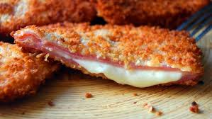

San Jacobos (Ham and Cheese Breaded Cutlets) - Glutenfree - Diaryfree

Description
San Jacobos are a delicious Spanish dish consisting of ham and cheese coated in crispy breadcrumbs and fried to golden perfection. This dish is similar to a Cordon Bleu but simpler, making it a great option for a quick and tasty meal.
The crispy exterior and the melted cheese inside create a delightful contrast of textures and flavors that make it a favorite for both kids and adults.
This dish is often served as an appetizer, snack, or main course, accompanied by a fresh salad or fries. It is easy to prepare and requires only a few ingredients, making it a perfect choice for a homemade comfort food experience.
Whether for a casual lunch or a party platter, San Jacobos are sure to impress with their deliciously gooey and crunchy bite.
Ingredients
- 8 slices of cooked ham
- 4 slices of vegan cheese
- 1 cup of glutenfree breadcrumbs
- 2 eggs (egg substitute)
- ½ cup of flour
- Salt and pepper to taste
- Vegetable oil for frying
Instructions
- Assemble the San Jacobos: Place a slice of cheese between two slices of ham, pressing gently to keep them together. Repeat for the remaining slices.
- Prepare the coating: In three separate bowls, place flour in one, beaten eggs in another, and breadcrumbs in the last one.
- Coat the ham and cheese: Lightly season the assembled ham and cheese with salt and pepper. Dip each piece into the flour, ensuring it is fully coated. Then, dip it into the beaten egg, and finally, cover it with breadcrumbs, pressing gently to make the coating stick well.
-
- Fry to perfection: Heat vegetable oil in a frying pan over medium heat. Once hot, fry each San Jacobo for about 2-3 minutes per side, until golden brown and crispy.
- Drain and serve: Remove from the oil and place on a plate lined with paper towels to absorb excess oil. Serve hot with your favorite side dishes.
Enjoy your homemade San Jacobos!
Back to Recipes